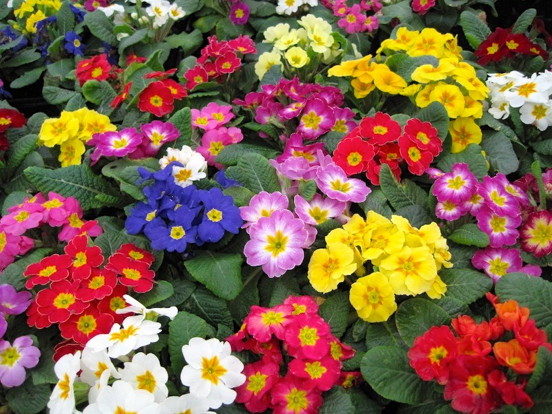

Notas
Plantas saludables en Primavera

No es necesario poner químicos en la tierra ni rociar las hojas con componentes nocivos para animales y personas, se puede mantener el jardín, balcón, terraza o a las plantas de interiores con ingredientes naturales.
Materiales:
- 1 cebolla
- 1 ajo
- Alcohol etílico
- Agua
Cómo:
Cortar y machacar el ajo y la cebolla. Cuando quede irreconocible poner unos 100 ml del alcohol de a poco. Reservar sólo el líquido. Repetir una vez más usando el mismo picadillo de ajo y cebolla Repetir una tercera vez pero sólo con 50ml de agua. Luego sumar a la botella el ajo y la cebolla que queda. Agitar y mandar a la heladera…
Ojo, a no confundirse con otra bebida… aunque el olor hará lo que no haga un buen etiquetado.
Luego de dejar reposar al menos un día, volver a agitar, mezclar nuevamente con agua y a usar!!!!
Dato: Estos ingredientes son orgánicos por lo que habrá que repetir el proceso con mayor asiduidad.
Para saber: El uso de pesticidas químicos es nocivo para la salud de las plantas y de todos los seres vivos que habitamos el planeta. De hecho, no es casual que en Europa se haya prohibido su uso por dos años de los que matan a las abejas.
Plaguicidas Naturales
Aceite vegetal (De oliva, girasol…..): Es ideal para combatir a las cochinillas. Hay que “pintarlas" con un pincelito.
Bicarbonato de sodio: Sirve como fungicida. Por cada 4 litros de agua 1cucharada de bicarbonato, 2,5 cucharadas de aceite vegetal y media cucharadita de jabón natural.
Nicotina: Ahuyenta al pulgón, trips y otros insectos de cutícula blanda. Macerar 3 cigarrillos rubios sin el filtro en 1 l de agua. Filtrar y rociar.
Pelitre: Combate pulgones, mosca blanca, ácaros. Macerar 50 g de flores secas en 1 litro de agua durante 24 horas, filtrar y al usar agregar 30 g de jabón de potasa.
Aceite de parafina: Ataca a pulgones, cochinillas, ácaros también en sus fases hibernantes ya que cubre a los insectos impidiéndoles respirar. Mezclar 10cc en 10 litros de agua.
Uso: Este plaguicida espanta bichos y mosquitos y también termina con los hongos.
Ajenjo: Evita pulgones, ácaros, cochillinas y es ideal como repelente de hormigas. Macerar durante una semana 300gr de planta fresca o 30g de planta seca en 1 litro de agua. Filtrar y rociar.
Azufre: Elimina todo tipo de ácaros. Se pueden diluir 80gr de azufre micronizado en 10 litros de agua, también se puede espolvorear.